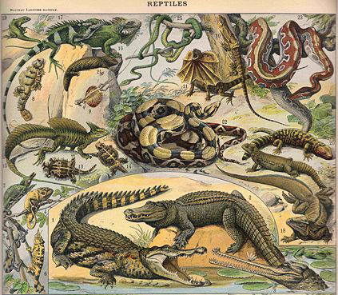
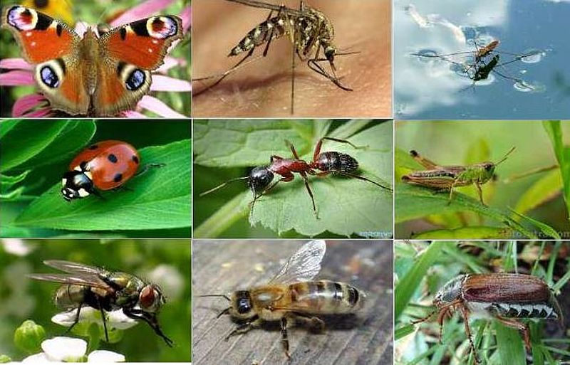
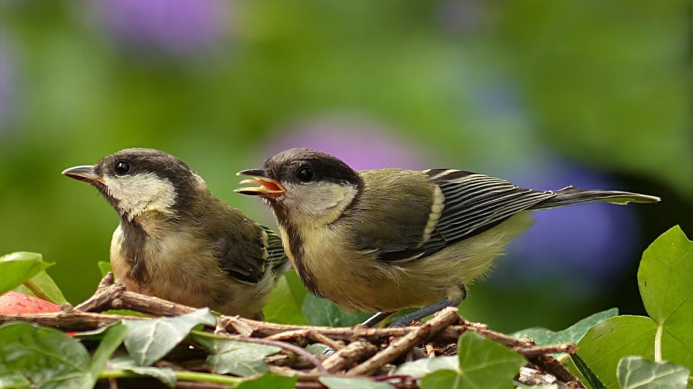

рептилії - клас, що традиційно виділяється переважно наземних хребетних тварин з скарби амніот, що включає сучасних черепах, крокодилів, дзьобоголових і лускатих. Рептилій є парафілетичної групою, оскільки дали початок птахам, але не включають їх самих. більше інформації -сюди

Комахи - клас безхребетних членистоногих тварин. Згідно з традиційною класифікацією, разом з багатоніжками відносяться до підтипу трахейнодихаючих. Назва класу походить від дієслова «січ» і є калькою з фр. insecte, що означає «тварина з насічками»> більше інформації -сюди

Птахи - група теплокровних яйцекладних хребетних тварин, що традиційно розглядається в ранзі окремого класу. Добре відокремлена з інших груп сучасних тварин. більше інформації -сюди